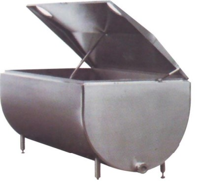
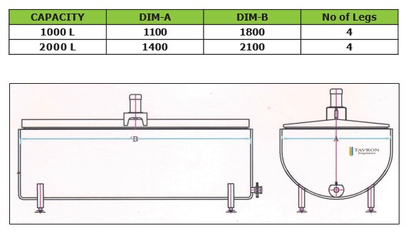
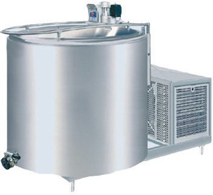
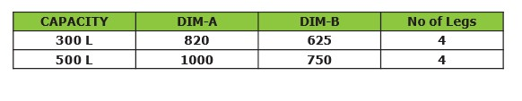
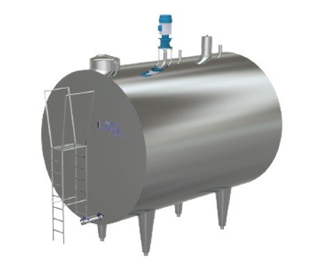
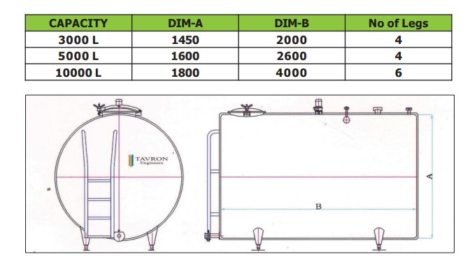

- Bulk Milk Coolers are storage tanks used for cooling and holding the milk at the range of 3’C to 4’C.
- Designed to be user friendly for installation and operation.
- Robust and Durable tank made of Laser Welded Dimple Jacketed Sheet Construction allows faster cooling owing to direct expansion and efficient heat transfer.
- Inner Shell is made up of SS304/SS316.
- Conforms to ISO 5708 2AA II- latest Version.
- To facilitate adequate and rapid cooling of the entire
content
of a tank, BMC tank is equipped with agitator.
Stirring the milk ensures that all the milk inside the tank is of the same temperature. - The Condensing unit of reputed make is used for Cooling Purpose.
- BMC is provided with control panel having digital temperature controller for Compressor Auto cut-off operation.
- The control panel can be designed with HMI controlled PLC for automatic system.
- Emerson/Danfoss Make Condensing unit is used.
- Energy Efficient and simple design.
- Cleanable with CIP.
- Available in variable sizes 300 L to 10000 L

OPEN TANK BMC
- The Open Tank BMC are available in sizes ranging from 300L,500L, 1000L and 2000L.
- Tank is provided with spray ball cleaning (optional)
- Inner Shell is made of SS304/SS316 as per customer requirement.
- Well-designed Laser Welded Pillow Plate is used for optimum heat transfer.
- Control Panel with Digital Temperature Controller is
provided for Auto-Operation of Compressor.
Control Panel can be modified as per customer requirement.


CLOSED TANK BMC
- The Closed Tank BMC are available in sizes ranging from 3000L, 5000L and 10000L.
- Tank is provided with spray ball cleaning.
- Inner Shell is made of SS304/SS316 as per customer requirement.
- Well-designed Laser Welded Pillow Plate is used for optimum heat transfer.
- Control Panel with Digital Temperature Controller is
provided for Auto-Operation of Compressor.
Control Panel can be modified as per customer requirement. - BMC design confirms to ISO 5708 standard.
